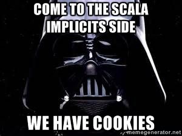

class: center, middle, inverse # Scala implicits <div><br /></div> Yes, we have! --- ## Два вкуса * Implicit parameters ```scala implicit val howManyTimes: Int = 100 def justDoIt(implicit times: Int) { println(s"I did it $times times.") } ``` * Implicit conversions ```scala case class Doer(x: Int) { def doItAgain { println(s"I did it again $x times more.") } } implicit def intToDoer(x: Int): Doer = Doer(x) def justDoIt(doer: Doer) { doer.doItAgain } justDoIt(42) ``` --- ## Implicit parameters * Любая функция может иметь один последний блок implicit-параметров. ```scala def someMethod(x: Int, y: String)(implicit c: Context, n: Config) ``` * Если явно не передать значения для implicit-параметра, компилятор найдёт implicit-переменную того же типа. * В месте вызова такой функции должна быть доступна implicit единственная переменная такого же типа. --- ## Implicit parameters Если явно не передать значения для implicit-параметра, компилятор найдёт implicit-переменную того же типа: ```scala scala> def callme(implicit x: String) = println(x) scala> implicit val hello: String = "Hello, world!" scala> callme Hello, world! ``` --- ## Implicit parameters Если явно не передать значения для implicit-параметра, компилятор найдёт implicit-переменную того же типа, ...или не найдёт: ```scala scala> def callme(implicit x: String) = println(x) scala> callme <console>:13: error: could not find implicit value for parameter x: String callme ^ ``` Но никто не запрещает сделать явно: ```scala scala> callme("Hello, Scalalab!") Hello, Scalalab! ``` --- ## Implicit parameters ### But why?!? * Передавать общий контекст, конфигурацию, состояние. * Используются для реализации type classes (monads, monoids, ordering). * В качестве свидетельства об истинности какого-то предположения о программе при доказательстве её корректности. --- ## Implicit conversions * implicit methods ```scala implicit def fromAtoB(a: A): B = ??? ``` * implicit classes ```scala implicit class B(val a: A) { def brandNewMethod = ??? } ``` --- ## Implicit conversions * Отображают A в B * Применяются если значение типа A используется там, где нужен тип B: * у `a: A` вызывается метод, которого нет у A, но есть у B. ```scala val a = new A(); a.brandNewMethod ``` * функция требует аргумент типа B, но ей передают что-то типа A. ```scala def acceptB(x: B) = ??? acceptB(new A) ``` ??? Если значение используется в контексте не своего типа, то компилятор попытается найти implicit-преобразование в нужный тип. --- ## Implicit conversions ### But why?!? * Кастомное приведение типов. * Для расширения функциональности классов без вмешательтва в их код (паттерн "pimp-my-class", a.k.a. extension methods). * В качестве правил/предикатов при доказательстве корректности программы. --- ## Implicits ### <center>Компилятор находит… как?!?</center> <center></center> --- ## Implicits ### Компилятор находит… как?!? * Текущая область видимости ```scala implicit val x: Int = 123 implicit def strToInt(x: String) = x.toInt ``` * Объект-компаньон соответствующего типа ```scala case class A(x: Int) object A { implicit val defaultA: A = A(0) implicit def intToA(x: Int) = A(x) } ``` --- class: center, middle, inverse # Implicit <small><%</small> b<small>:</small>ounds --- ## Implicit bounds ### View <% bounds Я могу смотреть на A, как будто это B: ```scala case class A(x: Int) case class B(x: Int) { def methodFromB = ??? } object B { implicit def fromAtoB(a: A): B = B(a.x) } // def acceptA[A](a: A)(implicit ev: A => B) = ??? def acceptA[A <% B](a: A) = a.methodFromB acceptA(A(1)) ``` --- ## Implicit bounds ### Context: bounds Я выполняюсь в заданном контексте B, привязанном к A: ```scala trait Monad[M[_]] { def point[A](x: => A): M[A] def bind[A, B](xs: M[A], f: A => M[B]): M[B] def ap[A, B](xs: List[A], f: A => B): M[B] } implicit object ListMonad extends Monad[List] { def point[A](x: => A) = List(x) def bind[A, B](xs: List[A], f: A => List[B]) = xs.flatMap(f) def ap[A, B](xs: List[A], f: A => B) = xs.map(f) } // def zeroOut[A](xs: A)(implicit ev: Monad[A]) = ??? def zeroOut[A: Monad](xs: A) = implicitly[Monad[A]].ap(xs, (_: Int) => 0) ``` --- class: inverse, center, middle # That´s all folks! Grab a cookie <img src="cookies.jpg" /> You deserved it! --- class: center, middle # Questions?